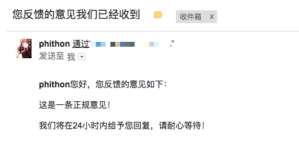
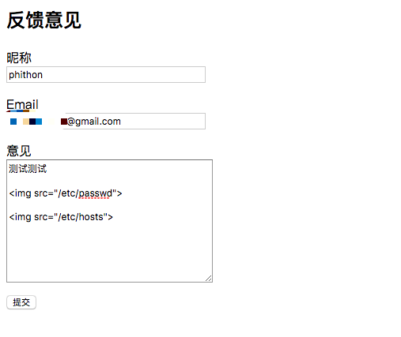
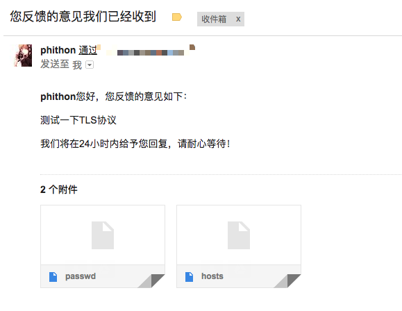

PHPMailer Arbitrary File Read (CVE-2017-5223)¶
PHPMailer is a popular PHP library for sending emails.
Before the PHPMailer 5.2.18, during the email sending process, PHPMailer searches for image tags (<img src="...">) in the email content and extracts their src attribute values as attachments. Therefore, if we can control part of the email content, we can use <img src="/etc/passwd"> to read the file /etc/passwd as an attachment, resulting in an arbitrary file read vulnerability.
References:
Environment Setup¶
First, create a .env file in the current directory with the following content (modify the configuration values to your SMTP server, account, and password):
SMTP_SERVER=smtp.example.com
SMTP_PORT=587
SMTP_EMAIL=your_email@example.com
SMTP_PASSWORD=secret
SMTP_SECURE=tls
Here, SMTP_SECURE is the SMTP encryption method, which can be set to none, ssl, or tls.
Then compile and run the test environment:
docker compose build
docker compose up -d
After the server starts, visit http://your-ip:8080/ to see a "Feedback" page.
Vulnerability Reproduction¶
On the "Feedback" page, normal users fill in their nickname, email, and feedback for submission. This information will be stored by the backend, and the backend will send an email to notify users that their feedback has been submitted:

This scenario is common in real-world applications. For example, when users successfully register on a website, they usually receive a notification email containing their nickname. Therefore, if we insert malicious code
<img src="/etc/passwd">in the nickname field, files on the target server will be read as attachments.
Similarly, we can place the malicious code in the "Feedback" field:

When receiving the email, it contains attachments /etc/passwd and /etc/hosts:

Download and read the files.